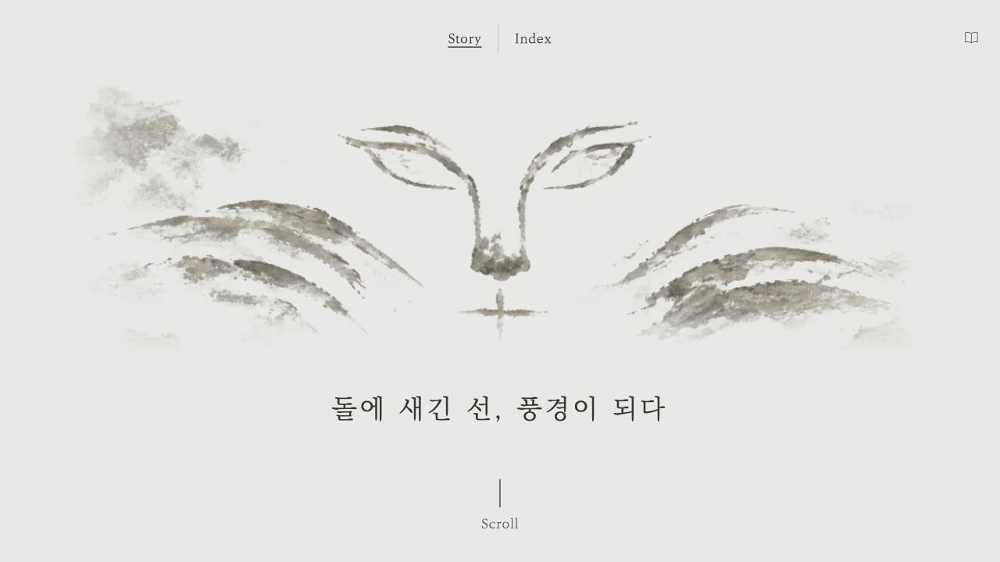

이야기 시작
옅은 종이색 화면 가운데 작은 원형 화살표와 “Click to enter”를 배치해 주세요. 첫 클릭으로 이야기가 시작되도록 구성하고, 화면 크기에 맞춰 여백과 버튼 크기를 조정해 주세요.Story · 05


완성된 화면과 동작을 바탕으로 재구성한 지시문입니다. 실제 입력 원문과는 구분해 정리했습니다.
옅은 종이색 화면 가운데 작은 원형 화살표와 “Click to enter”를 배치해 주세요. 첫 클릭으로 이야기가 시작되도록 구성하고, 화면 크기에 맞춰 여백과 버튼 크기를 조정해 주세요.풍경을 화면 가득 보여 주고 상단에는 Story와 Index, 하단에는 이동 안내와 소리 버튼을 배치해 주세요. 스크롤을 멈추면 한 프레임을 유지하고, 인물의 대사는 반투명 한지 패널에 읽기 좋게 표시해 주세요.